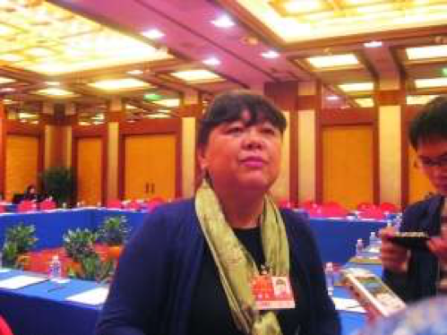
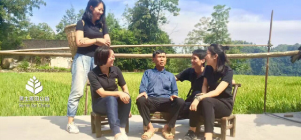
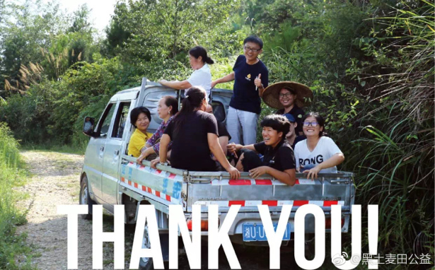
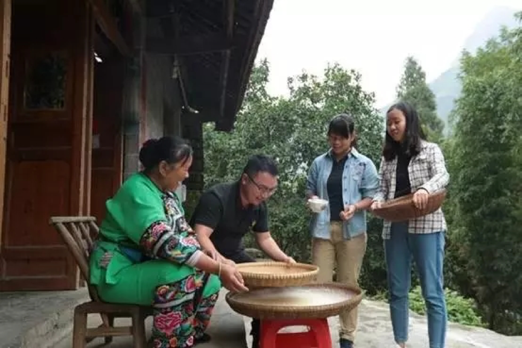
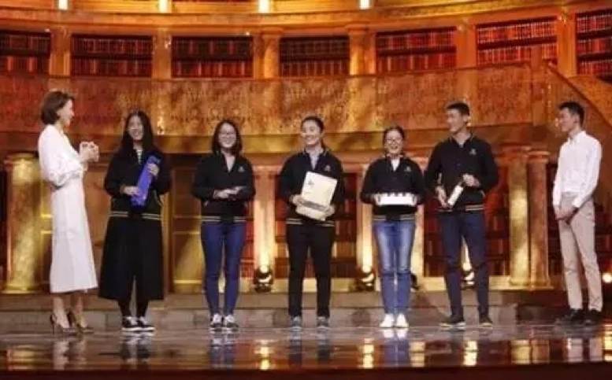
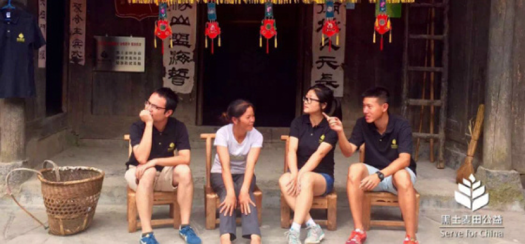
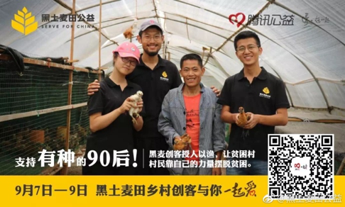

一篇文章《我奋斗了18年，才和你坐在“星巴克”一起喝咖啡》，对那位出身农村，刻苦学习，在高考的独木桥上奋勇搏杀进知名大学校园，最终读完硕士，成为坐拥百万年薪的城市白领感觉似曾相识，我们除了感慨这座大都市有多少这样艰苦奋斗，追逐梦想，认为一定要靠自己的天分和刻苦是可以改变自身命运的热血青年，他们通过个人奋斗洗去了乡村的印记，融进城市生活，星巴克的咖啡变成了一种城市中产阶级身份象征和一种荣耀。我们也渐渐服气这种优胜劣汰，教育仿佛是从小学、初中、高中、大学、研究生，一级一级上来的完美淘汰制度，终将留下那些储备知识，锻炼思维，增强能力，从旁人所不及的事情，脱颖而出，一鸣惊人，才能悠然淡定的有时间、喝得起星巴克的咖啡。但最近2017年北京文科状元熊轩昂的一番话，实力真诚的打脸。寒门难出贵子，社会的阶级分层是否不再看你有多努力，多聪明，多坚持，而是开始赤裸裸的现实告诉你会在开始就输在人生的起跑线上？！
那我们再来看看2016感动中国的小伙子秦玥飞吧，这位1985年出生在重庆的美国耶鲁大学全额奖学金获得者，没有选择逆袭后的穿西装、拿高薪、喝咖啡的优越金领生活，而是成为了湖南省衡山县福田铺乡白云村的一名大学生村官。他在2013年荣获乡村 “最美村官 ”；2015年发起黑土麦田公益计划；他在乡村交出的工作业绩和他的耶鲁答卷一样令人惊讶和敬佩，短短几年，修缮硬化村级道路、安装路灯、改善农田灌溉设施、引进信息化教育设备、改扩建敬老院、提供校车安全保障，有利倡导乡村公益项目的落地实施，为当地谋取民生福祉做出了巨大贡献。就像他在《感动中国》中的人物评价：“在殿堂和田垄之间，你选择后者。脚踏泥泞，俯首躬行，在荆棘和贫穷中拓荒，洒下的汗水是青春，埋下的种子叫理想。守在悉心耕耘的大地，静待收获的时节。”
这三位营销案例中的人物更像时光交错中的三代知识分子的一个侧面，砥砺奋进改变自身命运的同时，是否有这份责任和勇气为改善底层人民的生活状况和教育状况而尽一份自己的能力，起码理念上的变更，不再人为地在上升的通道上，设置障碍，让乡村也富享民国待遇，享受城市化的果实，通畅无阻地在城市通过打工或者经商致富。而不是施舍式地帮助，象征性的名额调剂，但愿寒门出贵子不再是一个奇迹。
附录：http://bbs.tianya.cn/post-develop-49233-1.shtml《我奋斗了18年，才和你坐在一起喝咖啡》》文章链接
附录：北大文科状元采访视频：http://v.youku.com/vshow/idXMjg3MTk0OTkyOA==.html和英语流利说软文公益推送文稿：http://mp.weixin.qq.com/s/fkJiOdUkyjUp43wW5RNgqg
附录：秦玥飞在朗读者节目中的朗诵《泥泞》视频：http://www.iqiyi.com/v_19rraalv7o.html
软文：是指通过特定的概念诉求、以摆事实讲道理的方式使消费者走进企业设定的“思维圈”，以强有力的针对性心理攻击迅速实现产品销售的文字（图片）模式。
“在殿堂和田垄之间，你选择后者，脚踏泥泞俯首躬行，在荆棘和贫穷中拓荒，洒下的汗水是青春，埋下的种子叫理想，守在悉心耕耘的大地，静待收获的时节。”——秦玥飞
你相信知识改变命运吗？你相信寒门出贵子吗？北京新科高考状元已经不相信了！日前，北京高考状元的桂冠被北京二中一位实诚孩子熊轩昂摘得！这孩子接受采访时说的一番话这两天刷爆朋友圈。 状元说的很扎心： 我觉得农村地区的孩子越来越难考上好学校，我是普通家庭长大的，但是衣食无忧，父母都是知识分子，而且在北京这种大城市，在教育资源上享受到这种得天独厚的条件可能是外地孩子或农村孩子所完全享受不到的，这种东西让我在学习的时候可能相对来说能走一些捷径。
我们也不要鼓励我们农村的孩子去上大学，因为一旦农村孩子读了大学，就回不到自己的家乡，回不去自己的家乡就是一个悲剧。 “你看看现在，咱们花了多少钱供一个大学生，上大学是要很大费用的，往往一个家有一个大学生就返贫了。”她还说，供完了大学生进城以后，就不回农村了。她还表示，一边是就业难，一边是自己不愿回农村。“在城市里呢，蜗居在北京或者蜗居在他读书的地方，可是蜗居后，要到什么时候才能买得起房？像这么高的房价，什么时候买得起？好了，这样他自己这一代牺牲了，将来他还得有他的第二代，到那个时候，他可能才适应这个城市。”王平认为，农村的孩子如果读的是中专或是高中的话，他就会回到农村。“他们不用来城里，在农村也许就发展起来了，有技术，有目标，有幸福。” 
黑土麦田（Serve for China）是民政部批准成立的全国性公益组织，由耶鲁大学的三位优秀中国毕业生发起，旨在培育杰出的农村创业者和农村公共服务者，为乡村创造可持续的影响，让中国的优秀青年易于投身公共事业，用实干与创新为脱贫攻坚和农村发展做出贡献，通过磨砺成长为中国和世界的建设者。
黑土麦田的团队一半是清华、北大、耶鲁、哈佛等著名高校的优秀毕业生，来自金融、商业、科技、学术等领域；团队的另一半则是在农村建设一线拼搏的农村创客，拥有丰富的农村工作经验。黑土麦田的联合发起人秦玥飞从耶鲁本科毕业后至今一直扎根农村担任大学生村官，曾被央视评为全国“最美村官”。 君自故乡来，应知故乡事 当很多年轻人都往大城市涌的时候，有些人却选择回到了自己在农村的家乡。这是一批刚毕业的大学生，这是一批有志青年，这是一批黑土麦田的扶贫专员。他们来自不同大学的不同专业，完全可以在城市里谋一份不错的职业，但在当下“大众创业、万众创新”的时代，农村独有的生态自然资源触动了他们“创业”敏感的神经，在城市和农村之间，他们的选择是:回家去，回到农村去，背靠青山，脚踩黄土，创一番自己的事业! 这是一群为了建设家乡的理想而奋斗的青年，他们曾经的身份是知名大学的毕业生、海外留学生，但这些并没有为他们带来过多的光环，而是肩负了一份责任感，他们不忘初心，用年轻的智慧，深入农村家乡，根据当地的生态农业做可持续经济增长产品，帮助当地的农民发家致富。

黑土麦田在四川绵阳、山东东营、江西宜春、广西来宾、西藏山南等地为大量农村创客提供了资金众筹、电商下乡、乡村普法、创业帮扶等方面的服务，取得了突破性的成果。同年，黑土麦田夺得OTEC创业大赛全球决赛冠军、年度最佳项目奖、最佳“互联网+”类项目奖，并入选北京市朝阳区“凤凰计划”。国家领导人曾到访黑土麦田并给予高度评价。
黑土麦田推出“农村创客”计划 （Serve for China Fellowship），每年资助一批全国和海外顶尖高校的优秀毕业生以“大学生村官”的灵活身份到农村从事为期至少两年的创业创新和精准扶贫。入选Fellows的主要工作内容是：通过创新服务帮助农村经济组织负责人更高效地创业，通过整合资源带领返乡青年等农民进行创业实践，解决当地在公共卫生等民生领域最迫切的问题。9月，来自海内外各大高校的黑土麦田乡村创客前往4个省的15个贫困村，立足当地实际，通过“造血”的方式，利用当地的资源优势创新产业，帮助当地村民精准脱贫。创业扶贫需要方法，黑土麦田公益需要形成良性的造血机制。 黑土麦田会为Fellows提供经济、履职、出路等方面的保障，实现优秀人才下得去、待得住、干得好、流得动。黑土麦田Fellows将在未来成为优秀的农村创业致富带头人、高素质基层公务员、企业或投资机构中的农村市场专家等。 创业与创新，实干与兴邦 这群年轻人正在用全新的方式在全球数字化的今天一点点镌刻历史，他们用自己的行动实干兴邦，他们用自己的信念坚决勇闯，这也是黑土麦田公益能够感动所有人的理由，它不是融资平台，不是销售平台，而是年轻人用创业的方式减少贫困的公益的平台，旨在让中国的优秀青年易于投身公共事业，用实干与创新为脱贫攻坚和农村发展作出贡献，通过磨砺成长为中国的前行建设者。  这就是《朗读者》上董卿现场说“喝一口精神百倍，永葆青春”的苞谷烧，这就是他们为湘西农民打开销路的一款产品，这就是他们的理想!他们不忘桑梓情，倾力回报家乡恩。 
这里不止有苞谷烧的故事，还有苞谷酸。苞谷酸是湘西人民的“老干妈”，每当怀揣梦想的年轻人准备踏上征程，去外边世界闯一闯的时候，心系儿女的母亲们就会为他们准备一些苞谷酸，让他们出门在外，依然能感受到家的味道。作为乡土文化，这些传统的手工技能，能够得到更大的市场且流传是黑土麦田在湖南省花垣县磨老村的扶贫专员们想要做的事，因此黑土麦田的扶贫专员便和当地村民一起做起了苞谷酸事业。除了这两款产品，扶贫专员们还在村子里和绣娘一起发展苗绣、开发当地特色农产品等，力图帮助村民发展自己的事业，带动乡村发展，从而留住更多人才，构建更好家乡。 《朗读者》用精美的文字、用最平实的情感读出文字背后的价值，为人们展现有血有肉的真实人物情感。董卿在一期节目开始就提出观点，“生存还是毁灭，这是一个永恒的选择题，以至于到最后我们成为什么样的人，可能不在于我们的能力，而在于我们的选择。”她在这个观点中推出了一群年轻人，并心甘情愿地为他们手中的腊肉、苞谷烧、山茶油等农产品做“广告”。他们有着和别人一样的青春，本质上还是过的一样的日子，不一样的是他们在做着的事。他们做的是大多数年轻人都不敢做的事——带动贫困乡村进行产业扶贫!其背后的故事让人心酸，感动董卿，感动现场，感动知道真相的人…… 
黑土麦田“乡村创客”计划是什么？
• 黑土麦田（Serve for China）每年资助一批顶尖院校的优秀毕业生和间隔年大学生到中国农村从事为期一到两年的精准扶贫和创业创新，并为入选的“乡村创客”提供强劲的薪资保障、专业的能力培训、丰富的履职支持、多元的出路选择，让中国的有志青年能够安心地去农村追逐梦想，并高效地为乡村的发展创造可持续的贡献。 
“黑土麦田”的创始人秦玥飞在耶鲁大学毕业后拒绝美国辉煌的未来，毅然决然地选择回到中国，其原因一个是从小成长在工人家庭受到的耳濡目染,另一个就是他在大学期间做田野调查时了解到的乡村现状,“那些农村的家长们对于孩子们的期望和我的父母是一样的。我不想再看到他们无法实现自己的期望之后的沮丧。”而且他本身对公共事务就比较感兴趣,因此选择成为一名大学生村官。秦玥飞称,也在积极寻找自己目前从事的事业与未来人生规划的契合点,在公共服务的路子上走下去。“我不是雷锋,我也有自己的理想。发展中的祖国给了我太多机会。在担任村官过程中,我所收获到的经验与体会,也与自己未来的规划相契合。因此,我现在依然选择留在田野之中。” 秦玥飞所做的一切都是在为“不让农村的父母失望”、“让农村的孩子有更好的发展”而努力。他始终相信“寒门仍能出贵子”。因此他和他的伙伴们开始推行“乡村创客计划” 黑土麦田乡村创客计划：投身一场伟大理想，无愧一段美好青春 你想象过生活的多少种可能？喧嚣的都市、拥挤的人潮和躲不掉的雾霾；朝九晚五、挤不上的地铁和吵闹的合租房；还是日复一日开不完的工作会议，做不完的PPT？
现代社会越来越多的声音都说“寒门难能再出贵子”，你经历过高考的磨难，成为了一名怀抱梦想的大学生，眼中对未来的希冀却在现实的摧残下渐渐枯萎，如今的你拥有另一种选择，用你所学，回报养育你的地方，实现你想要的不同。
如果你向往着脚踏实地，并仰望星空，那么，黑土麦田或许可以为你提供人生的另一种可能：与志趣相投的小伙伴们一起发现、探索、创造中国乡村的无限与未来。
中国农村充满机遇和挑战，却受困于人才匮乏：中国最优秀的青年不了解农村，也“去不起”农村，因为追逐理想的难度太大、成本太高。
黑土麦田“乡村创客”计划为年轻的梦想家和实干家们解除各种现实的羁绊，为实现农村父母对孩子的期望，让我们安心奔赴广袤农村，和农民们一道创业创新，投身一场伟大的理想，无愧我们的美好青春。 
“黑土麦田 实干兴邦”视频链接：https://v.qq.com/x/page/s0340al53sy.html